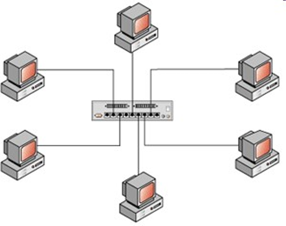
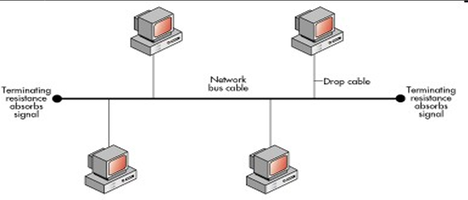
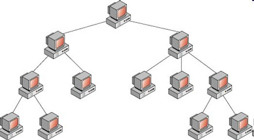
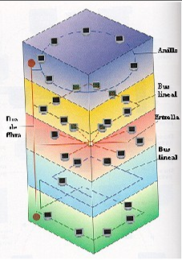
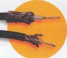
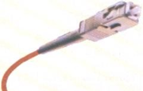
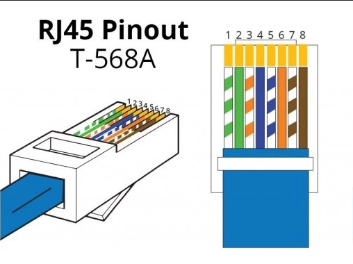
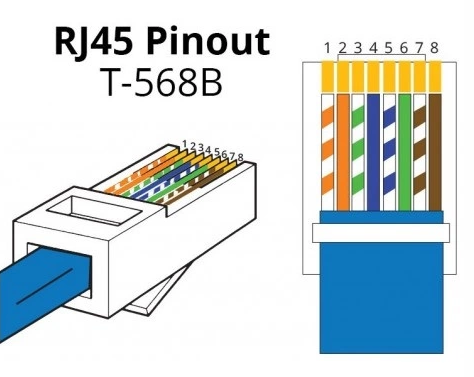

Diagrama Textual del Funcionamiento de Internet en un Ordenador
Usuario- El usuario solicita acceso a un sitio web o servicio en línea a través de un navegador web.
- El navegador web envía la solicitud al Sistema Operativo del ordenador.
- El sistema operativo recibe la solicitud y la envía al Navegador Web.
- El navegador web procesa la solicitud y la envía al Proveedor de Servicios de Internet (ISP) a través de la Tarjeta de Red.
- La tarjeta de red es un componente de hardware que permite la conexión a Internet.
- La tarjeta de red envía la solicitud a través de la Red de Área Local (LAN) o Red de Área Amplia (WAN).
- El ISP recibe la solicitud y la envía a través de la Red de Internet.
- La red de Internet es una red global de redes que conecta millones de dispositivos.
- El servidor web recibe la solicitud y procesa la información solicitada.
- El servidor web envía la información solicitada de vuelta al Proveedor de Servicios de Internet (ISP).
- El ISP recibe la información solicitada y la envía de vuelta al Ordenador del usuario a través de la Red de Internet.
- La tarjeta de red recibe la información solicitada y la envía al Navegador Web.
- El navegador web procesa la información y la muestra al usuario en la pantalla.
- HTTP (Hypertext Transfer Protocol): protocolo utilizado para la comunicación entre el navegador web y el servidor web.
- TCP/IP (Transmission Control Protocol/Internet Protocol): protocolo utilizado para la comunicación entre dispositivos en la red de Internet.
- DNS (Domain Name System): sistema que traduce nombres de dominio en direcciones IP.
- Ordenador del Usuario -> Proveedor de Servicios de Internet (ISP): la tarjeta de red envía la solicitud a través de la red de área local o red de área amplia.
- Proveedor de Servicios de Internet (ISP) -> Servidor Web: el ISP envía la solicitud a través de la red de Internet.
- Servidor Web -> Proveedor de Servicios de Internet (ISP): el servidor web envía la información solicitada de vuelta al ISP.
- Proveedor de Servicios de Internet (ISP) -> Ordenador del Usuario: el ISP envía la información solicitada de vuelta al ordenador del usuario.
Redes de Computadoras
DefiniciónUna red de computadoras es un conjunto equipos informáticos, conectados por medio de cables, señales, ondas o cualquier otro método de transporte de datos, para compartir información, recursos y servicios. A cada una de las computadoras conectadas a la red se le denomina un nodo.
ClasificaciónSegún su cobertura
Usada para la comunicación entre los dispositivos cerca de una persona. El alcance de una PAN es de algunos metros.
Una red que se limita a un área tal como un cuarto, un solo edificio o una nave. Una LAN grande se divide generalmente en segmentos lógicos más pequeños llamados grupos de trabajo.
Una red que conecta las redes de dos o más locales pero no se extiende más allá de los límites de la una ciudad.
Es una red que cubre un área geográfica amplia y en gran parte de su estructura utiliza instalaciones de transmisión telefónicas.
Según su topología

EstrellaLa red se une en un único concentrador. Su ventaja es que este monitorea el tráfico y evita las colisiones y una conexión interrumpida no afecta al resto de la red. La desventaja es que los mensajes son enviados a todas las estaciones, aunque vaya dirigido a una.
 Anillo
Anillo
Las estaciones están unidas unas con otras formando un círculo por medio de un cable común. Las señales circulan en un solo sentido alrededor del círculo, regenerándose en cada nodo. Cada nodo examina la información que es enviada a través del anillo, si no está dirigida a él la pasa al siguiente nodo. La desventaja es que si se rompe una conexión, se cae la red completa

BusLas estaciones están conectadas por un único segmento de cable. A diferencia del anillo, el bus es pasivo, no se produce regeneración de las señales en cada nodo. Los nodos en una red de "bus" transmiten la información y esperan que ésta no vaya a chocar con otra información transmitida por otro de los nodos. Si esto ocurre, cada nodo espera una pequeña cantidad de tiempo al azar, después intenta retransmitir la información

JerárquicaLos nodos están colocados en forma de árbol. Es parecida a una serie de redes en estrella interconectadas, con la diferencia que no tiene un nodo central sino un nodo de enlace troncal, generalmente ocupado por un hub o switch, desde el que se ramifican los demás nodos. Es una variación de la red en bus, la falla de un nodo no implica interrupción en las comunicaciones porque se comparte el mismo canal de comunicaciones.

HíbridasEl bus, la estrella y el anillo se combinan algunas veces para formar redes híbridas.
Según su relación funcional
El servidor es una máquina específica que usa un sistema operativo desarrollado especialmente para este tipo de red. Las estaciones de trabajo comparten recursos disponibles a partir de este servidor. La ejecución de las tareas está dividida entre el cliente (o estación) y el servidor. Proporciona mayor seguridad y rendimiento.
Es un tipo de red donde todos los equipos conectados pueden desempeñar el papel de servidor y de estación de trabajo al mismo tiempo. Si alguien quisiera compartir un recurso podría ofrecerlo a los demás. Este es un tipo de red para trabajos simples, donde el nivel de información es pequeño y la seguridad no es importante.
Placas de comunicación
- Placa de red: permite la conexion con otras computadoras utilizanod un cable.
- Modem: cuando la PC se conecta por medio de un router.
Cables de conexión
El mas común tiene ocho cables trenzados para evitar interferencias.

CoaxialUsado en televisión por cable.

Par trenzadoUsa luz para transmitir datos a muy alta velocidad y sin interferencia.
| Tipo | Barreras (techo, pared, piso) |
Confiable (metros) |
Probable (metros) |
|---|---|---|---|
| Área Abierta | Vista directa | 120 | 200 |
| Área Semiabierta | Madera, material sintético | 30 | 50 |
| Área Cerrada | Ladrillo | 15 | 25 |
| Área Obstruída | Metal, concreto | - | 10 |
Equipos de Conexión
- Hubs o Concentradores: son equipos que permiten estructurar el cableado de las redes. El hub da conectividad pero lo que entra por una boca se repite en todas y son las terminales las que tienen que rechazar lo que no es para ellas.
- Switch: es parecido al hub pero lo que entra por una boca solo sale por la que tiene conectada la terminal destino haciendo que la red tenga menos trafico, se dice que es un hub inteligente porque sabe a quien enviar cada paquete.
- Puentes (Bridges): puede unir segmentos o grupos de trabajo LAN, pero puede dividir una red para aislar el tráfico o los problemas.
- Enrutadores (Routers): conecta redes o segmentos red con distintos protocolos y arquitecturas.
- Repetidores (Repeaters): amplían la longitud de la red uniendo dos segmentos y amplificando la señal, pero junto con ella amplifican también el ruido.
- Pasarelas (Gateways): son equipos para interconectar redes con protocolos y arquitecturas completamente diferentes a todos los niveles de comunicación, al igual que un router, pero se lo emplea como puerta de salida de una red a otra más grande.
El Hub es "el que grita" (repite todo a todos). El Switch es "el cartero" (sabe exactamente en qué puerto está cada destinatario), lo que hace la red más rápida.
El puente une dos pasillos de la misma casa (segmentos de una misma red). El router es "el guia de viajes" que decide el camino más rapido para llegar a otra ciudad (otra red con distinto protocolo).
Es simplemente un "megáfono" para que la señal llegue más lejos cuando el cable no alcanza.
Es "la aduana" o puerta de salida obligatoria para ir a un territorio gigante, como Internet.
Abrir documento completo
Formato de Informe
Portada o caratula:
Logo, título, materia, nombre del docente, integrantes del grupo, curso y división, año.
Índice:
Número de página.
Introducción:
Breve descripción de lo que trata el tema.
Palabras Clave:
Abreviaturas o siglas de palabras que se van a repetir.
Desarollo y contenido:
Texto, imágenes, vídeo.
Conclusión:
Breve descripción de lo que nos pareció el tema (contenido u opinión).
Bibliografía:
Debe mencionar los links junto a un resumen de lo que trata la fuente de información.
Norma A y Norma B de Ponchado de cables
Cable UTP
Un cable UTP es un cordón que está resguardado por alguna clase de recubrimiento y que permite conducir electricidad o distintos tipos de señales. Es una sigla que significa Par Trenzado no Blindado. El cable UTP por lo tanto, es una clase de cable que no se encuentra blindado y que suele emplearse en las telecomunicacones.
Cableado Estructurado
Nombran dos tipos de normas o configuraciones. La diferencia entre ellas es el orden de los colores de los pares a seguir para el conector RJ45.
¿Para qué sirve?
- Minimizar tiempo, costos y aumentar el rendimiento de equipos.
- Optimizar y compartir recursos ya que es administrable por el usuario.
- Mejora y facilita el mantenimiento de los equipos.
Estándares T568-A y T568-B
Define el órden de los colores en el conector RJ45.

Norma A- Blanco-Verde
- Verde
- Blanco-Naranja
- Azul
- Blanco-Azul
- Naranja
- Blanco-Marrón
- Marrón

Norma B- Blanco-Naranja
- Naranja
- Blanco-Verde
- Azul
- Blanco-Azul
- Verde
- Blanco-Marrón
- Marrón
Abrir documento completo
Tipos de Unidades de Almacenamiento de información
| Unidad de almacenamiento | Equivale a |
|---|---|
| Kilobyte (KB) | 1024 bytes |
| Megabyte (MB) | 1024 kilobytes |
| Gigabyte (GB) | 1024 megabytes |
| Terabyte (TB) | 1024 gigabytes |
Instalación y Administración de Redes Pequeñas
Estructura de una Red y Características
Debemos tener en cuenta la estructura y ubicación de los equipos dentro de un ambiente laboral. Puede ser:
- Cableada: puede superar los 100 Mbps y llegar hasta 1 Gbps.
- Inalámbrica: la transmisión máxima es de 108 Mbps.
Pasos para Instalar una Red Pequeña
Es muy importante que el espacio donde montemos la red tenga la Instalación eléctrica en óptimas condiciones. Una vez tengamos definido por donde tener los cables de red, debemos calcular los metros necesarios.
- Realizar un obsquejo del recorrido que seguirán los cables y establecer en qué lugar irá ubicado el concetrador.
- Medir las paredes para arealizar una correcta Instalación del cable canal.
- Pasar el cable de red por el cable canal y armar las fichas en los terminales donde se ubicará el concentrador. En cada puesto de trabajo se debe armar rosetas con conectores RJ45 hembra.
- Una vez las fichas esten armadas se debe proceder a amorar el concentrador a la pared y a conectar cada una de las rosetas a él.
- Verificar que no exista ningun problema. La mejor forma de verificar los cables de red es mediante un tester de red.
- Con la red fisicamente armada, solo queda conectar a ella las computadoras, pero antes se deben instalar las interfaces en todas las computadoras que no la tengan o cuenten con una obsoleta.
Parámetros de Configuración
Para una red pequeña, los parámetros de configuración son bastante sencillos:
- Se debe asignar un nombre a cada equipo, junto con una descripción. Estos datos deben ser diferentes en cada PC, dado que sirven para reconocer a cada máquina dentro de la red.
- Se debe establecer el nombre del grupo de tabajo, que debe ser el mismo para todas las computadoras que conformen la red local.
Elementos de Red
Ademas de la planificación inicial, debemos determinar cúales son los componentes y las herramientas necesarias para armar una red pequeña.
- Cable UTP categoria 5
- Fichas RJ45
- Capuchones de Red
- Un Switch
- Módem
- Un Router
Equipos de Conectividad
- Módem USB ADSL
- Módem/Router ADSL
- Router WiFi
- Interfaz de red WLAN
Abrir documento completo
Redes de Datos y Arquitectura
Redes de Datos
Es un conjunto de equipos informáticos y dispositivos conectados entre sí mediante medios físicos o inalámbricos, con el objetivo de compartir información y recursos.
Usabilidad: Permite envíar correos, imprimir desde cualquier PC, compartir archivos y acceder a internet.
Ventajas: Ahorro de recursos, comunicación rapida, trabajo colaborativo, acceso centralziado a la información.
Arquitectura de Red
Es el diseño y la organización de los componentes de una red. Define cómo se comunican los dispositivos. Las principales tecnologías fueron:
ARCNET: Una de las primeras redes para oficinas. Usaba topología de bus y era lenta para los estándares actuales.
Token Ring: Utilizaba un "testigo" o token que circulaba por la red. Solo el equipo con el token podia transmitir datos.
Ethernet: Es el estándar mas utilizado hoy. Permite altas velocidades y usa el protoclo CSMA/CD par aevitar colisiones de datos.
Protocolos de Red
Son las reglas que permiten que dos dispositivos se entiendan. Por ejemplo: TCP/IP, HTTP, FTP. Sin protocolos la comunicación no seriá posible.
Modelo OSI y Tipos de Red
Modelo OSI
Es un modelo técnico de 7 capas que explica como viajan los datos desde un dispositivo a otro. Las capas son: Física, Enlace de Datos, Red, Transporte, Sesión, Presentación y Aplicación. Sirve para entender y resolver problemas de red.
Medios y digitalización
Medios de Transmisión
Guiados: Usan un cable físico. Ej: par trenzado, cable coaxial, fibra óptica.
No Guiados: Usan el aire. Ej: Wi-fi, ondas de radio, Infrarrojo.
Digitalización de señales
Es el proceso de convertir información analógica, como la voz, en señales digitales de 0 y 1 para que la computadora pueda procesarla y transmitirla.
Cableado y Soporte Físico
Soportes Físicos Para el Transporte de Señales
Ondas Sonoras: Usadas en algunos sistemas antiguos.
Ondas electromagnéticas: Usadas en WiFi y telefonía movil.
Cableado Estructurado
Es un sistema organizado de cables y conectores que permiten que la red sea ordenada, escalable y fácil de mantener.